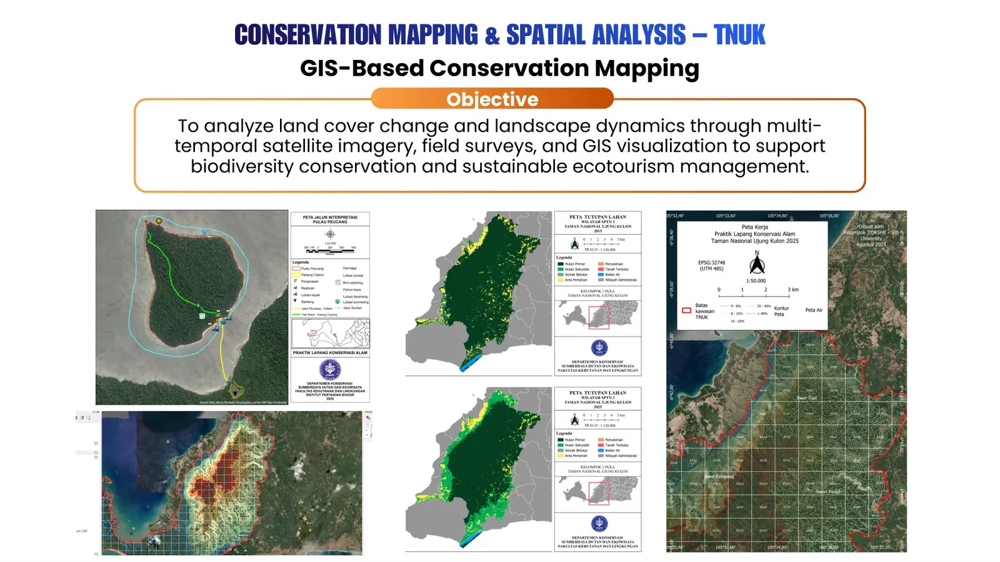

FIELD PROJECT / TEAM LEADERSHIP & CONSERVATION MAPPING
Integrated Conservation Field Practice & Spatial Analysis
Ujung Kulon National Park
Led a six-member field team in a multidisciplinary conservation project, coordinating land-cover, vegetation, biodiversity, forest-carbon, environmental-services, and nature-based tourism workstreams.

6Team members coordinated
~16,900 haProject area
2015 / 2025Landsat comparison years
1:50,000Working map scale
01 / PROJECT CONTEXT
A multidisciplinary field project supporting conservation and sustainable ecotourism planning.
The integrated field practice covered approximately 16,900 hectares within Ujung Kulon National Park. Workstreams included land-cover, vegetation, biodiversity, forest-carbon, environmental services, and nature-based tourism.
02 / MY ROLE
Team coordination and responsibility for land-cover analysis.
I led a six-member team, coordinated workstreams and field activities, and took responsibility for land-cover analysis. I also participated in team-based forest biomass and carbon-stock assessment; carbon work is described as collaborative rather than an individual calculation.
03 / METHODS & OUTPUTS
Remote sensing, field verification, and spatial planning maps.
- Processed Landsat 8 imagery from 2015 and 2025 using Google Earth Engine and QGIS for seven-class supervised land-cover classification.
- Supported confusion-matrix assessment and GPS-based field verification.
- Participated in forest biomass and carbon-stock assessment across coastal, riparian, and lowland forest ecosystems using vegetation inventory data, species-specific allometric equations, and a 0.47 carbon fraction.
- Prepared a 1:50,000 working map in UTM Zone 48S (EPSG:32748) with five slope classes, contours, grid, and plot references for field planning.
- Developed an ecotourism interpretation trail map for Pulau Peucang showing trails, bird-watching, snorkeling, sunset, camping, pier, and Banteng sighting locations.
04 / TEAM DELIVERY
Coordinating multiple disciplines requires shared references and clear task ownership.
The project brought together spatial analysis, ecological field observations, and visitor-use planning. My contribution combined team coordination with responsibility for the land-cover workstream, while other thematic outputs were delivered collaboratively by the team.
06 / PROJECT GALLERY
Visual evidence & outputs.
Selected maps, dashboard views, and project documentation. Select an image to view it at a larger size.
Data & interpretation note: Forest-carbon assessment was a team-based activity. The portfolio distinguishes team participation from the individual responsibility for land-cover analysis and team coordination.